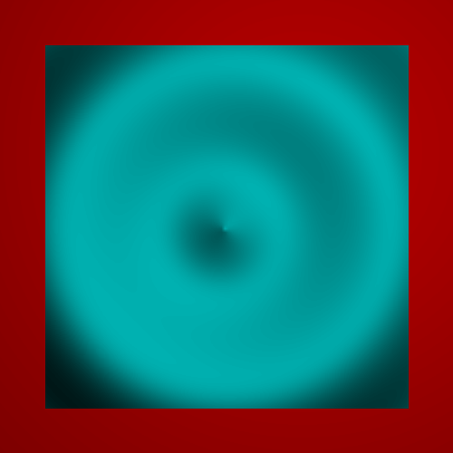
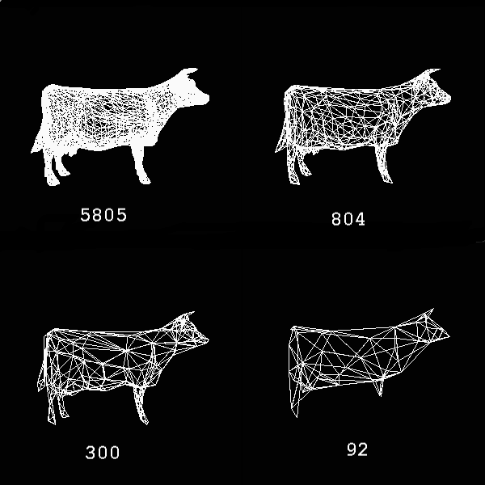
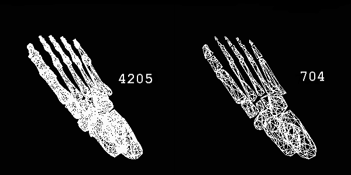

Project for CS 174c - Spring 1999
My tar file is available here
Abstract
For my project I will be duplicating the work of Jonathan Cohen,
Marc Olano, Dinesh Manocha in their 1998 Siggraph paper entitled
Appearance-Preserving Simplification. Their work involves
mesh simplification (includng normal maps), based on a new algorithm
to determin the "correctness" of the simplification. This new
algorithm is based on the actual screen upon which the mesh is to be
rendered, and simply uses color, and displacement to determin accuract.
Proposed Schedule
- Week 1 - Modify my renderer to deal well with the triangle meshes,
including texture and normal maps.
- Weeks 2-3 - Get the mesh simplification working without texture/normal maps
- Weeks 4-5 - Add texture/normal maps
- Any remaining time - Get meshes and play with it.
Progress
Renderer Modification:
I have now gotten Texture and Normal maps working from within my renderer.
It was slightly more complicated than I had expected due toi the fact that getting a coordinate system on each triangle required a bit of play with the
vectors defining the triangle.
Hear is an example of Texture mapping:
And one of normal maps:

Here are some simplification wireframes


Contact me at
peters@ugcs.caltech.edu
<